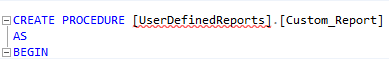

Note: Customized reports are automatically detected and appear in the reporting area under Uncategorized with a Custom Report placeholder.
The
To take full advantage of the
|
|
Note: Customized reports are automatically detected and appear in the reporting area under Uncategorized with a Custom Report placeholder. |
Reports are uncategorized when the written custom report is put in the UserDefinedReports attribute. For example:

In order for the report to then be placed in the correct location:
Update the Reports Table
Add in the classification
Configure the chart or parameter in the JSON file
Details are provided in the sections JSON Chart Objects and Parameters.
Related Topics